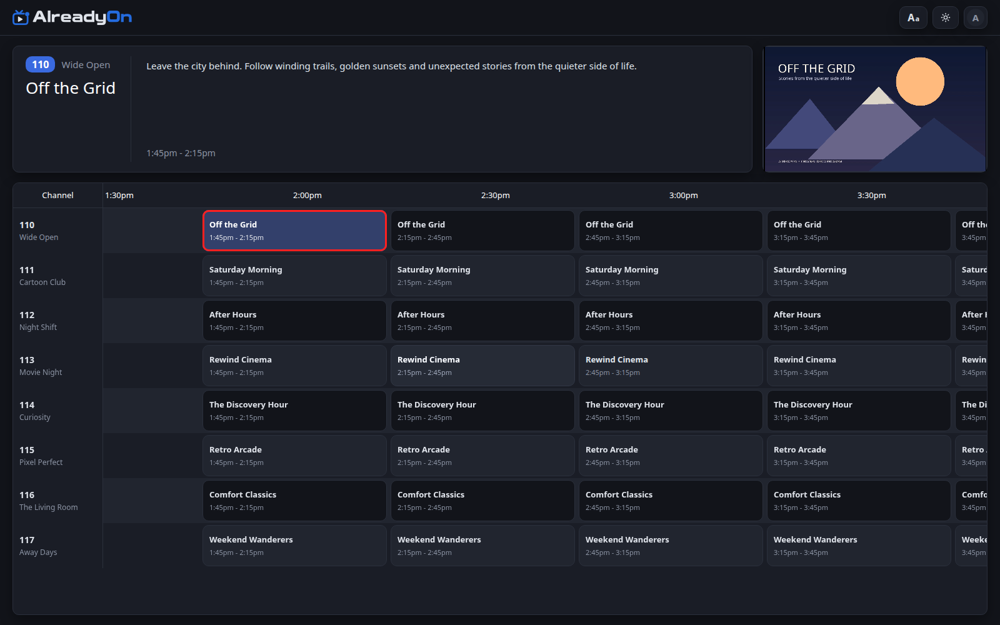

THE FIELD GUIDE
From setup
to “what’s on?”
A small, LAN-first setup is the best place to begin. Get one server and one screen working, then build from there.
01 / PREPARE
Before you begin.
You’ll need a compatible x86-64 Linux host or NAS with Docker Engine and Docker Compose, your own TV/movie files, and a browser on the same trusted home network. The published server image targets Linux amd64.
If your NAS uses a container app manager, use its Compose support or follow the same image, port, and folder mappings below. Exact menus differ between NAS vendors.
New to Docker? Follow Docker’s installation instructions for your host, then its Compose getting-started guide.
02 / INSTALL
Give AlreadyOn a home.
- Create a folder for AlreadyOn on your server. Save the example below in that folder as
compose.yaml. - Replace
/YOUR/MEDIA/FOLDERwith your host’s real media folder. Replace the timezone and user/group IDs with values appropriate for your host. On Linux,id -uandid -gshow your current user and group IDs. The configuration folder needs write access; the media folder needs read access. - Open a terminal in that folder and run
docker compose up -d. - Open
https://YOUR-SERVER-IP:19900in a browser on the same network. Substitute your server’s local IP address.
services:
alreadyon:
image: ghcr.io/alreadyonapp/alreadyon:stable
restart: unless-stopped
ports:
- "19900:19900"
environment:
PUID: "1000"
PGID: "1000"
TZ: America/New_York
volumes:
- ./config:/config
- /YOUR/MEDIA/FOLDER:/data/media:ro./config keeps settings and the database outside the container. :ro makes the media mount read-only. Don’t remove the configuration folder when updating.
Complete the first-run page: choose a server name, then create the owner username and password. Keep these credentials private. The owner manages the library and server.
For hardware transcoding and advanced options, read the deployment reference and complete Compose example.
03 / LIBRARY
Bring the shows and movies.
- Open the WebUI’s media settings as the owner.
- Add your TV Show Folders and Movie Folders. Use paths inside the container, such as
/data/media/TVand/data/media/Movies—not the host-side path. - Use Refresh Media to scan. Large libraries can take time.
- Open the guide and check the resulting channels. The lineup depends on the media and metadata available; empty channels may be hidden.
Folder organization and usable metadata help scheduling. If something is missing, check the folder mapping and container permissions before rescanning. Optional metadata integrations are described in the project’s reference documentation.
04 / WATCH
Pick a channel. Settle in.
Choose your profile and open the channel guide. Select a channel to join the currently airing program. AlreadyOn follows a scheduled, linear-TV rhythm, so tuning in may start partway through a show.
Use the guide to see what’s on and what’s coming next. Switch channels when the mood changes. Owners can adjust their library and settings; everyday viewers can focus on watching.

Synthetic demo lineup shown. Your lineup depends on your library.
05 / MORE SCREENS
Connect a phone or Google TV.
- Open the latest Stable release on GitHub. Download
alreadyon-android.apkfor Android phones/tablets oralreadyon-tv.apkfor Google TV. Use the signed release apps, not development builds. - Install the APK on your device. Android may ask you to allow installation from the app or file source you’re using; approve only that source for this installation.
- In WebUI Admin Settings, set the account’s TV Pairing PIN (6–12 digits).
- Open AlreadyOn on the device. Let it find the server on your trusted LAN, or enter your server’s HTTPS address manually.
- Sign in with the account username and pairing PIN. Pick a profile and channel.
On Google TV, use the remote to navigate the guide, select a channel for fullscreen playback, and press Back to return to the guide. The current channel keeps playing.
Discovery scans the local IPv4 network for about 30 seconds. Guest Wi-Fi isolation, firewall rules, or separate networks can prevent discovery. Manual entry also supports addresses outside that discovery scope. See the Android and Google TV reference for details.
The signed apps can offer updates from GitHub. Stable apps follow Stable releases, and Android asks you to approve installation. Reopen the app if necessary; normal updates preserve its settings.
06 / KEEP IT RUNNING
Your server, your pace.
Keep the first installation on your home network. Preserve and back up the configuration folder using your normal homelab backup process. Keep media mounted read-only where possible.
Update the server
Read the release notes, then run these commands in the folder containing compose.yaml:
docker compose pull
docker compose up -dYour persistent ./config folder is reused. Test a channel afterward. Don’t delete the database or create a fresh configuration just to troubleshoot an update.
Access beyond your home network
Public hosting is an advanced, optional step. Use a domain and a valid HTTPS certificate, protect account credentials, and understand your network exposure before enabling access. Follow the project’s HTTPS reference; don’t expose a quick test setup without reviewing it. VPN-based access is outside current support scope.
WHEN SOMETHING GETS IN THE WAY
A few quick checks.
- The page won’t open
- Check that the container is running, you used
https://and port19900, and the browser can reach your server’s network. - The library is empty
- Check the host folder mapping, container paths, read permissions, and scan completion. Try one small known media folder first.
- The app can’t find the server
- Try manual entry. Check guest-network isolation and firewall rules. Confirm the server is reachable from that device.
- Playback fails or stutters
- Try another file and device. Note the media format, server resources, app/browser version, and whether other viewers are active.
Still stuck? Our issue guide explains what information helps us investigate.